An invitation to discover, document, and share the visual and material culture of wine through a simple app.

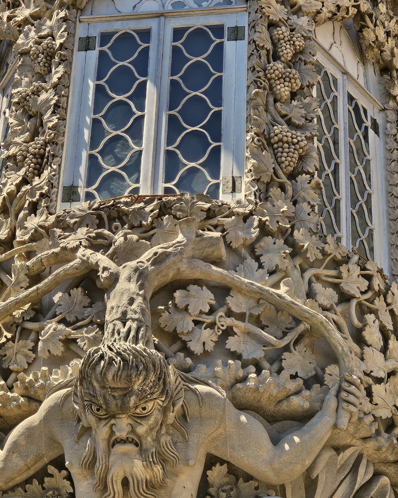

Wine leaves its traces wherever it takes root.
These traces can be found in every corner of culture: in the lyrics of a song, in agricultural traditions, in the flavours of a cuisine, or in visual and material culture. As an art historian, the last of these interests me most.
Vines appear in architectural details. Gods and goddesses once worshipped take shape around the wine cup. Harvests are depicted, wine is celebrated, and the joy of drinking this ancient beverage is expressed in countless ways across Europe's wine lands.


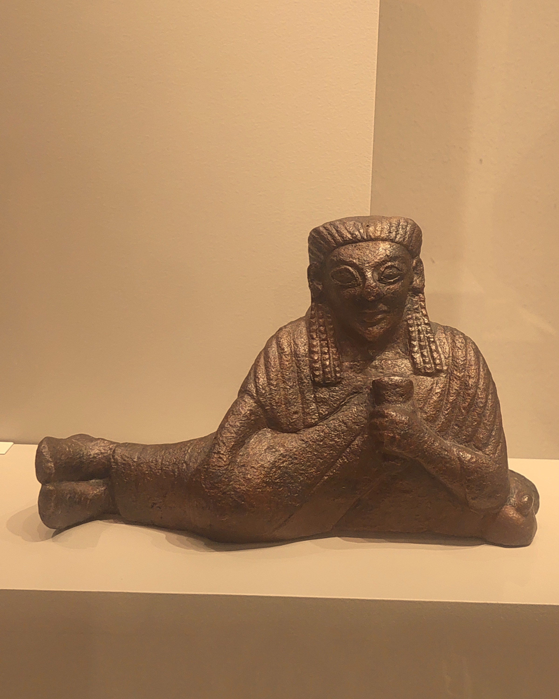
To my surprise, however, these traces are often overlooked — or even invisible — in the context of wine tourism. Wine tourism today is certainly much more than simply tasting and buying wine, but I believe the art-historical dimension of wine culture is still waiting to be fully integrated.
This is not an observation I arrived at through data. It comes from experience.
I have studied art history for many years, but wine is a relatively new terrain for me. After falling in love with wine, I began my own quest to hunt down its imagery. I have travelled through wine regions across Europe — from Bordeaux to Kefalonia, Rioja to Franken, Sicily to Niederösterreich, Lisboa to Dalmatia — and started a personal archive of whatever I encounter: a grape carved above a doorway, a freestanding sculpture holding a glass, the work of a contemporary artist or craftsperson displayed in a shop window or gallery.
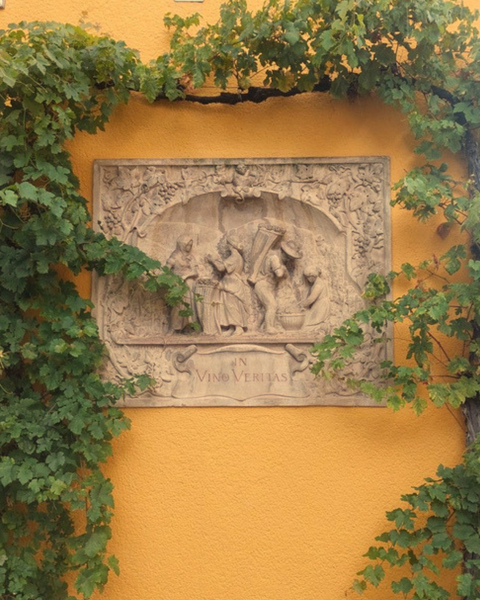
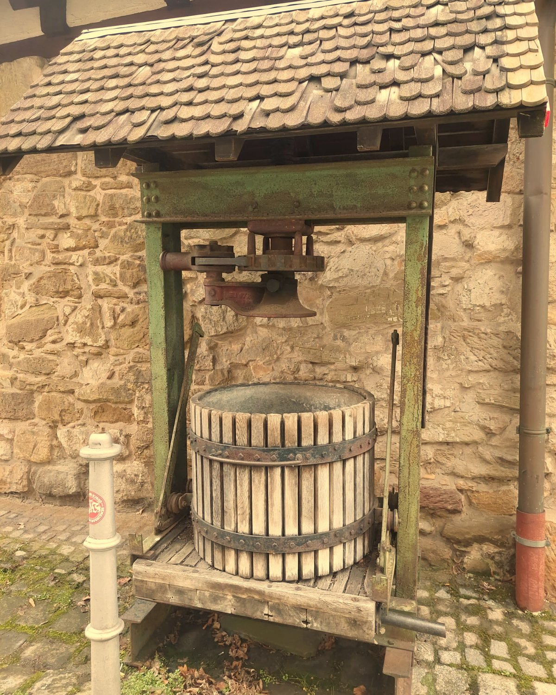
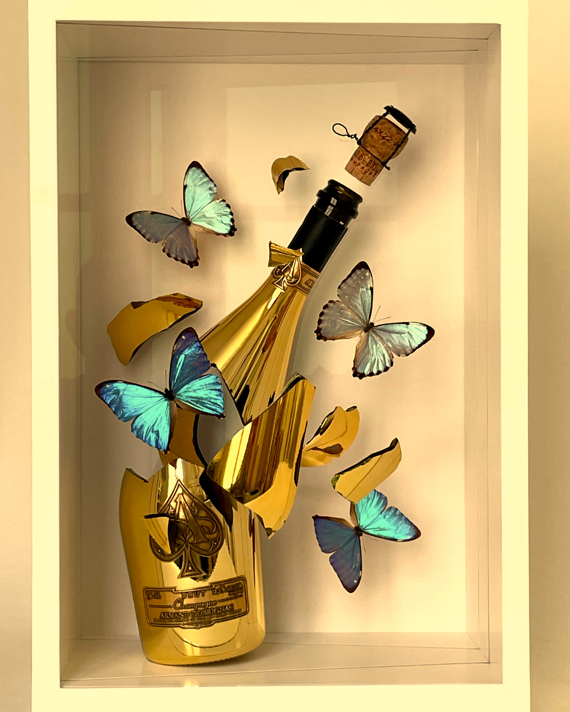
With every discovery, I am amazed by the richness of the materials and the layers of meaning they contain. And perhaps that should not be surprising, considering how deeply rooted wine is in the cultural heritage of Europe.
Spotting the wine has become my personal ritual whenever I visit a wine region. But I cannot resist the urge to invite other wine lovers into this rewarding activity — not only to help us understand wine culture more deeply, but also to learn about its history, support local communities, discover the people who keep its traditions alive, and experience a wine region to its fullest.

Spot the Wine is an invitation to look closer — to see how varied and vast wine culture actually is.
It is a way for wine lovers to discover, document, and share the visual and material culture of wine — the traces that surround us in every wine region but often go unnoticed.
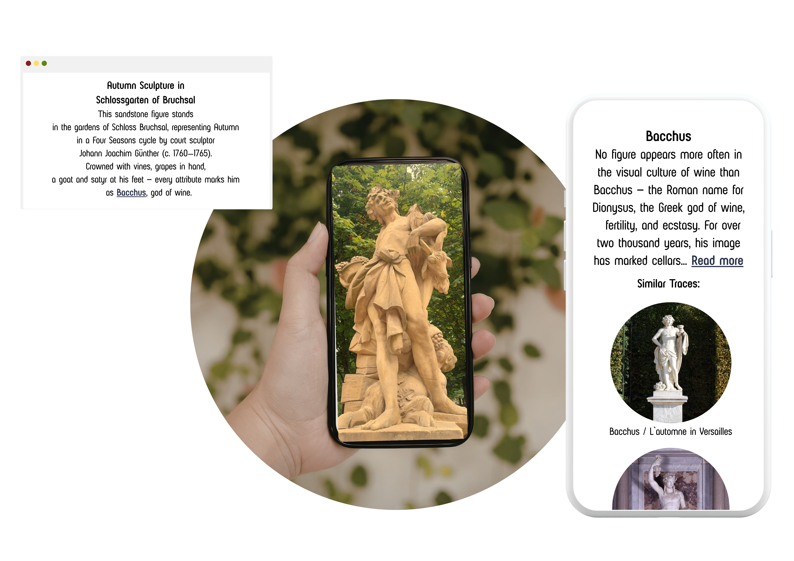
The idea is simple: when visiting a wine region, you move with an intention to see these traces. Vine motifs on a church portal, a Bacchus mask above a tavern door, an antique wine press in a village square, hand-thrown wine cups by a local potter, a harvest procession through the vineyards. Each discovery joins a growing, crowdsourced archive, all accessible through a simple app. What you find, others can explore. What others find, you can follow.
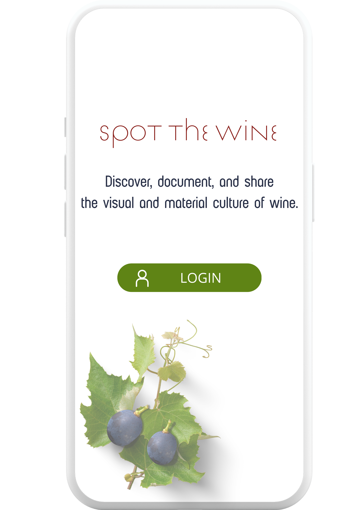
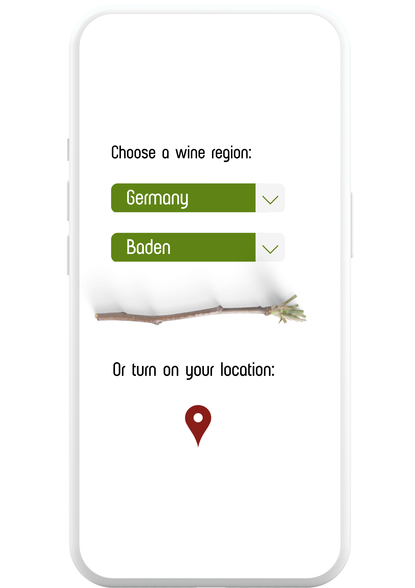
Over time, a new map emerges: not of wineries and tasting rooms, but of the cultural layer that gives each wine region its character.
There are two ways to use Spot the Wine.
You are planning a visit, or already on the ground, and you want to see what others have found. You open the map, browse by region or category, and let the traces guide your route. Each spot is an invitation to look closer at something you might otherwise have walked past.
You are visiting a wine region — walking through a village, browsing a market, exploring a cellar — and something catches your eye. You open the app, take a photograph, tag the category, and pin it to the map. You have just added to a collective archive that did not exist before.
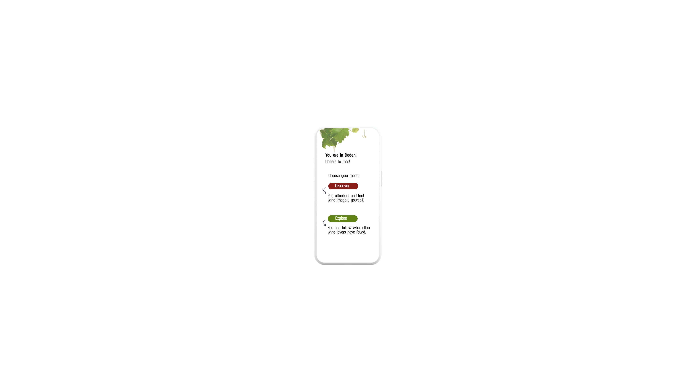
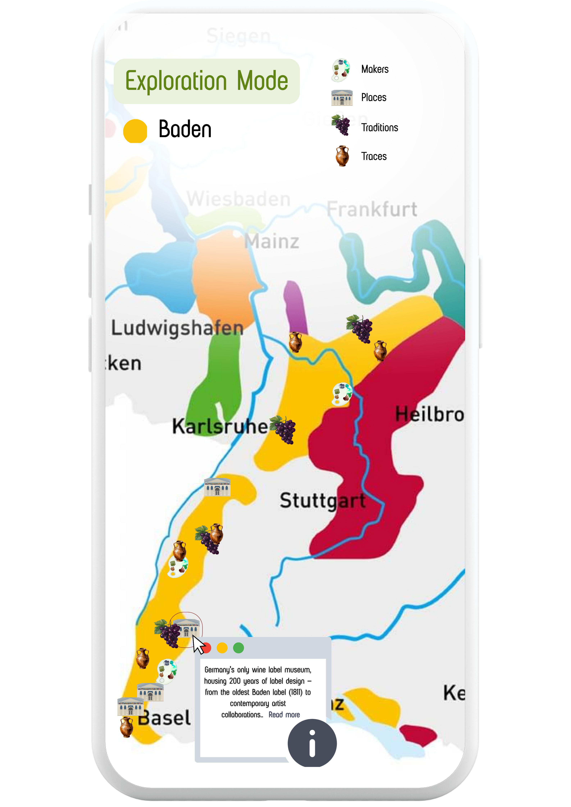
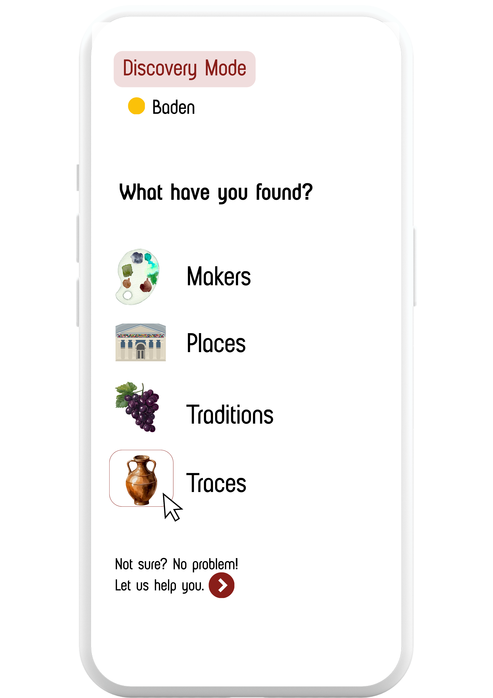
What counts as a spot? It might be a place: a historic cellar, a wine museum, a vineyard, a village square, a building shaped by wine. It might be a trace: an architectural detail, an old inscription, a mythological figure carved in stone, a vineyard motif, a vessel that tells a story about wine. It might be a tradition: a harvest festival, a procession, an agricultural practice, or a ritual still in motion. And it might be a maker: a ceramicist, painter, cooper or other craftsperson whose work connects with the culture of wine today.
The categories are not rigid boundaries. They simply help organise the different ways wine culture reveals itself. A single discovery might belong to more than one.
To encourage participation, the platform adds a light layer of gamification. Discoveries earn points. First to document a spot, or bringing attention to an underrepresented category, earns more. Contributors might also unlock new discoveries, routes or stories as they explore.
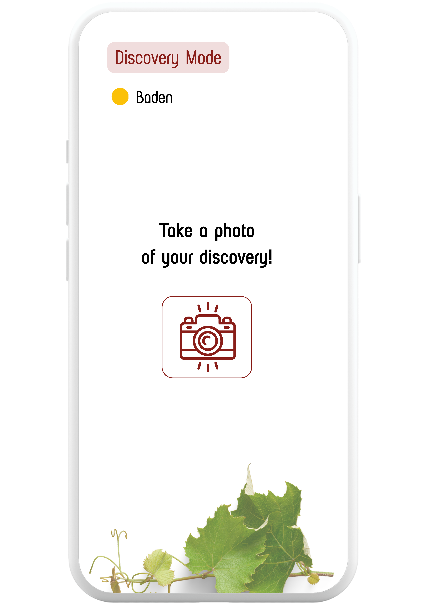
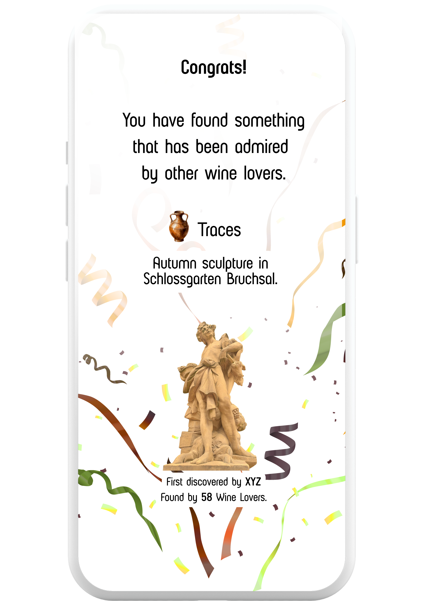
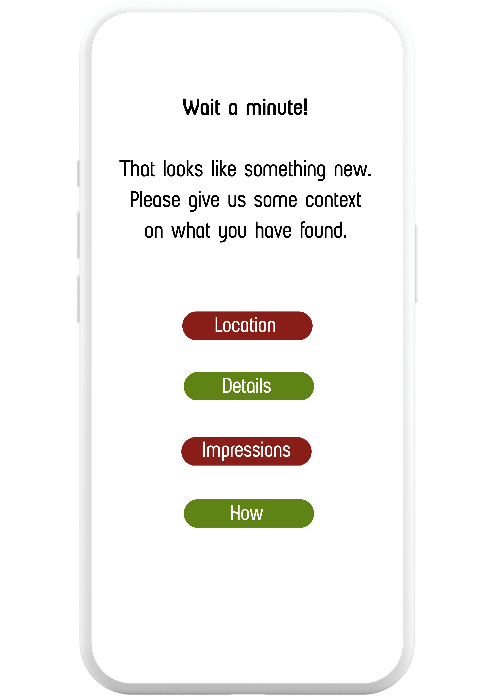
The goal is not competition. It is contribution. Spot the Wine is for people with curiosity and a desire to share something worth seeing. It rewards attention, not speed.

Spot the Wine is not about creating more attractions. It is about helping people notice what is already there — and creating value from what they find.
Wine has left countless traces across Europe's landscapes and cultures, but many remain unnoticed by visitors. Spot the Wine brings these fragments of visual and material culture into view and gives them context, connecting a carved grapevine, a historic object, an artwork or a local tradition to the larger story of wine.
Every discovery adds to a growing, crowdsourced record of wine culture. Instead of building a fixed catalogue from the top down, Spot the Wine allows the people who experience wine regions to contribute to documenting them. The archive keeps growing, changing, and reflecting both heritage and contemporary culture.
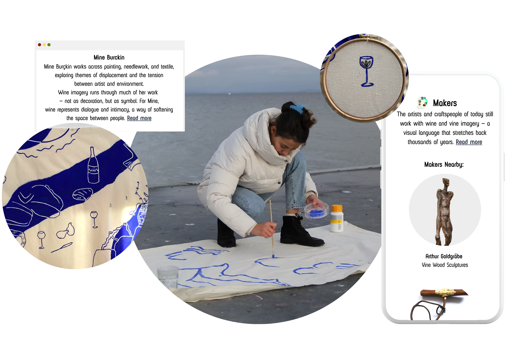
The cultural story of wine does not belong only to the past. Artists, craftspeople and other local creators continue to interpret and shape it today. Spot the Wine makes these people and their work part of the wine tourism experience, helping visitors discover the creative communities behind the places they visit.
By making cultural discoveries visible and rewarding destinations that contribute to them, Spot the Wine creates an incentive to invest in the cultural layer of a wine region. A winery that preserves a historic wine press, collaborates with an artist or supports a local cultural initiative can become part of the story visitors come to discover.
In this way, Spot the Wine turns attention into participation, participation into documentation, and documentation into a richer experience of wine regions.

I grew up in Anatolia, where vines have always been part of the landscape — though rarely for wine. I never thought much about them.
When I moved to Baden, that changed. I began travelling to wine regions across Europe, and in each one I started noticing how wine culture expressed itself: in architecture, imagery, festivals, craftsmanship and everyday life. I eventually began looking more carefully at my own region and found that Baden had its own rich collection of traces — many of them easy to miss unless you know to look.
This makes Baden a useful place to begin testing Spot the Wine.
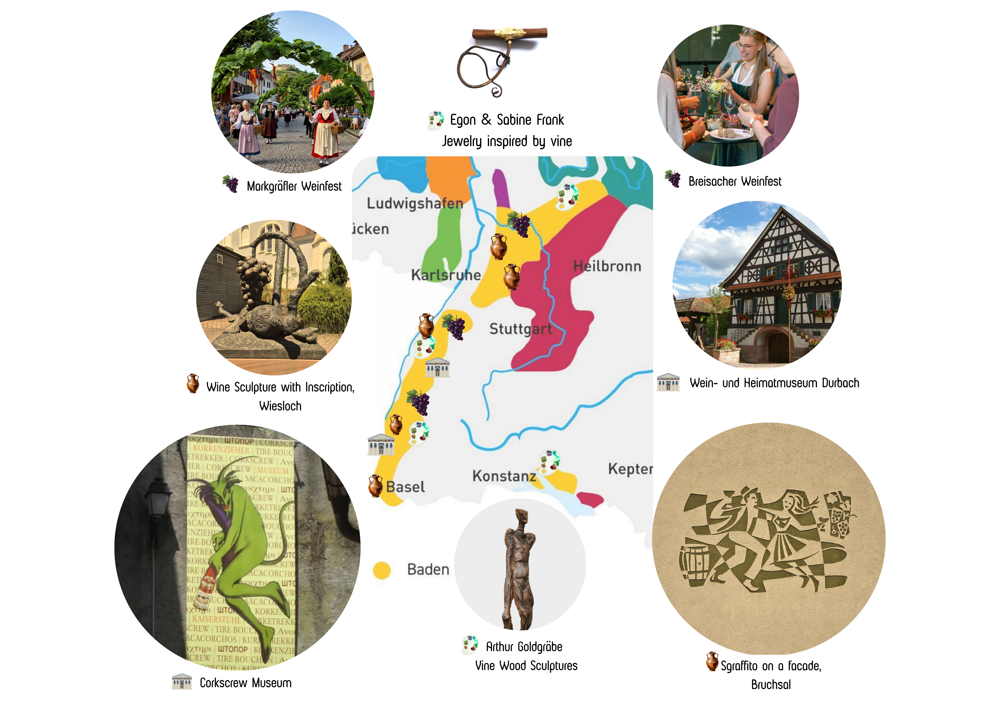
The aim would not be to create a comprehensive archive of Baden, but to build a small, representative proof of concept: a first collection of cultural traces that demonstrates what becomes visible when we look beyond wineries and tasting rooms. Existing knowledge from wine and tourism organisations, cultural institutions, local makers and communities could help identify places and stories that deserve to be seen.
The pilot would also be an opportunity to test the model itself. What do people choose to spot? What makes them stop and look? Which categories emerge naturally? Do discoveries encourage visitors to explore places, people and stories they might otherwise have missed? And what would make people want to contribute their own discoveries?
These lessons would shape the platform before it moves beyond its first region.
Baden is therefore not the destination of the project. It is the testing ground — a place to learn how a simple idea can become a useful layer of wine tourism.
If the model works there, it can travel.

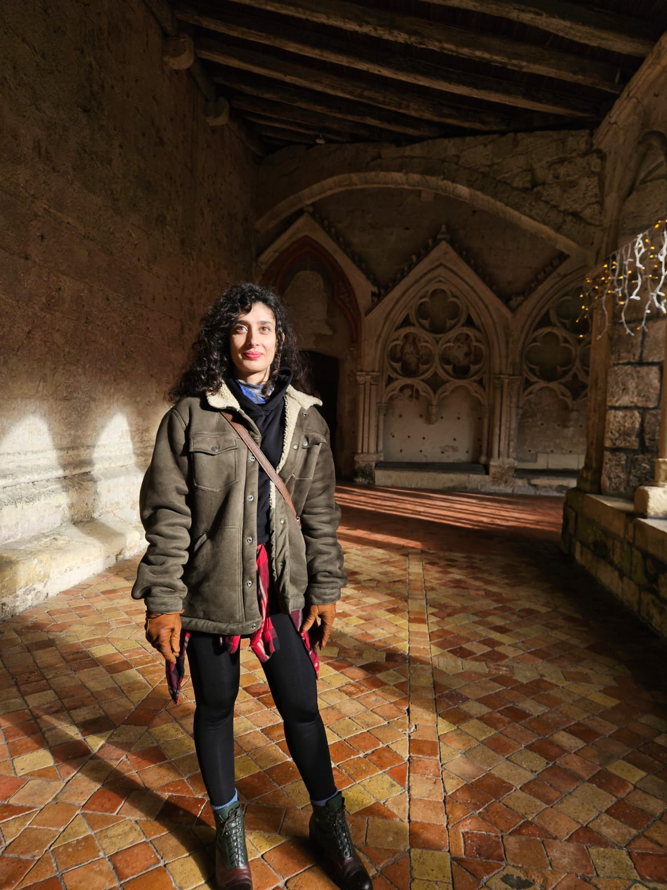
Spotting the wine in Saint-Émilion
I am an art historian who became fascinated by wine.
My academic background has taught me to look closely — to notice details, to ask where they come from, what they meant, and how their meanings change over time. Wine gave me a new landscape in which to apply that way of looking.
For several years, I have been exploring wine culture through research, travel and my own growing collection of observations. Through Runic Grapes, a platform I founded for wine-related art, craft and cultural writing, I work with artists and craftspeople, write about wine's visual history, and curate objects that carry its story. At the same time, I am learning viticulture on a small vineyard in Württemberg, experiencing first-hand the living side of a heritage I had previously encountered mainly through historical sources and images.
I have also been building a personal archive — photographing and documenting wine imagery wherever I travel, from architectural details to contemporary artworks. This ongoing practice became the working prototype for Spot the Wine.
Spot the Wine grew naturally out of these two worlds.
I am not approaching wine tourism as a tourism professional who has identified a gap in the market. I am approaching it as an art historian and wine enthusiast who kept noticing something that fascinated me — and eventually realised that I wanted other people to see it too.

I have the idea, the experience that led me to it, and a growing archive of discoveries. What I need now is the opportunity to explore what Spot the Wine could become.
Spot the Wine is a simple idea, but making it work across wine regions requires people who see the world from different perspectives. I want wine professionals and tourism experts to challenge and refine the concept; cultural institutions, researchers and local communities to help uncover the traces that make each region distinctive; and partners willing to experiment with it.
Mentorship would help me shape Spot the Wine into something that works not just as an idea, but as a sustainable platform. I have the art-historical perspective and the hands-on experience of documenting wine culture — but I would benefit from guidance on tourism, technology, partnerships, and how a model like this can adapt to different regions.
Being part of the UN Tourism network would also open doors that are difficult to reach alone. It would help me connect with tourism bodies, wine associations and cultural institutions, while learning from people already working at the intersection of wine, tourism and culture.
I do not want to build this in isolation. I want to learn from people who have done similar work, find collaborators who see the same potential, and allow the idea to develop through those encounters.
The first pilot can begin in Baden. But the model is designed to travel.
The ambition is not to create one more wine tourism platform. It is to create a new layer that any wine region can build into its visitor experience — a way to reveal the cultural traces of wine, invite people to discover them, and allow those discoveries to grow into a shared portrait of place.
The archive is already growing. What I need now is the knowledge, partnerships and support to turn a personal ritual into a model that can belong to many wine regions.